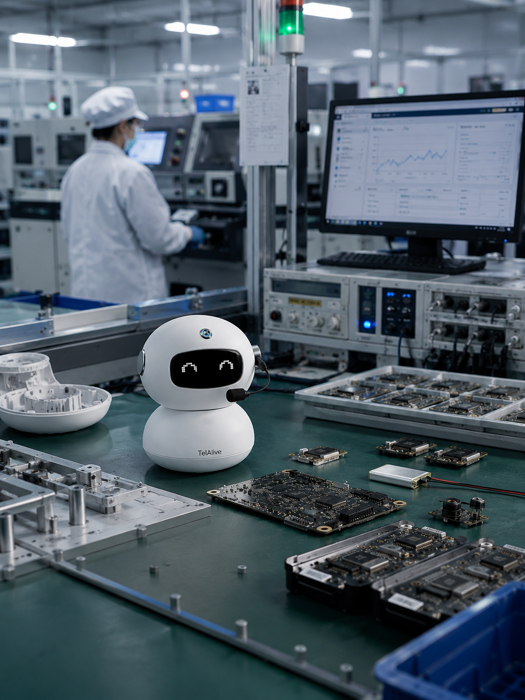
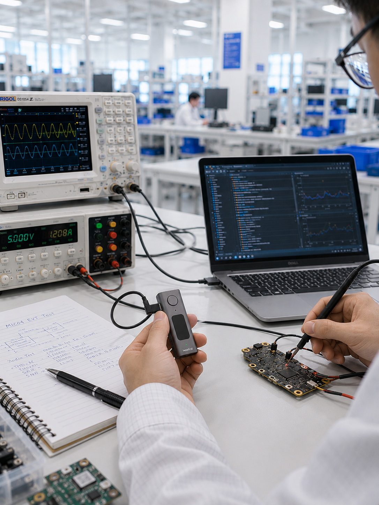
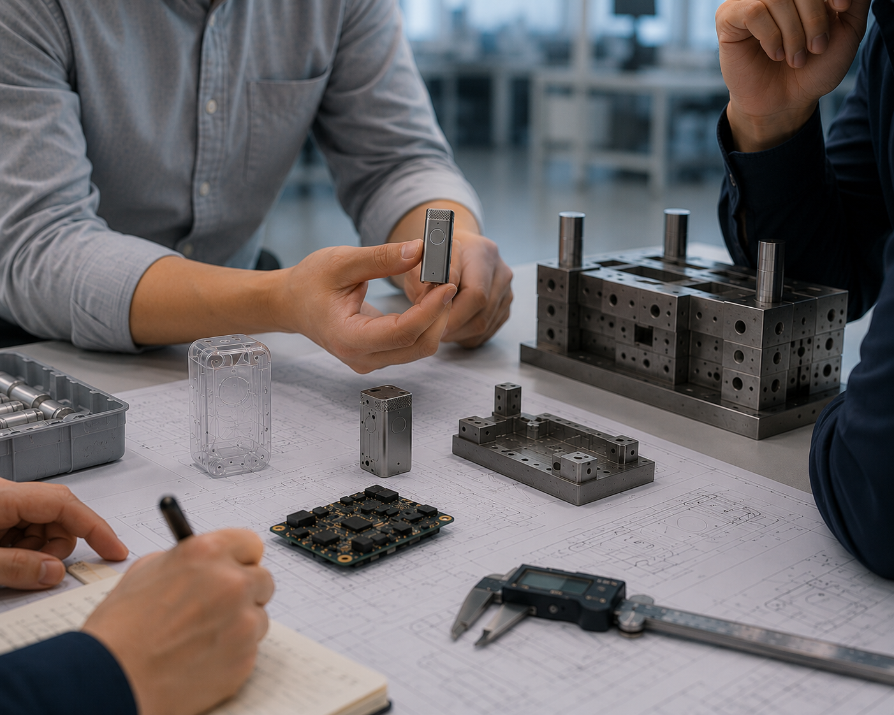
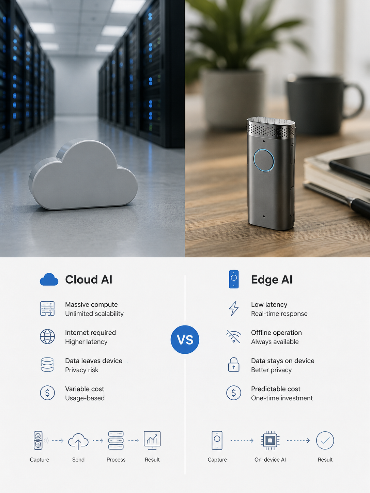
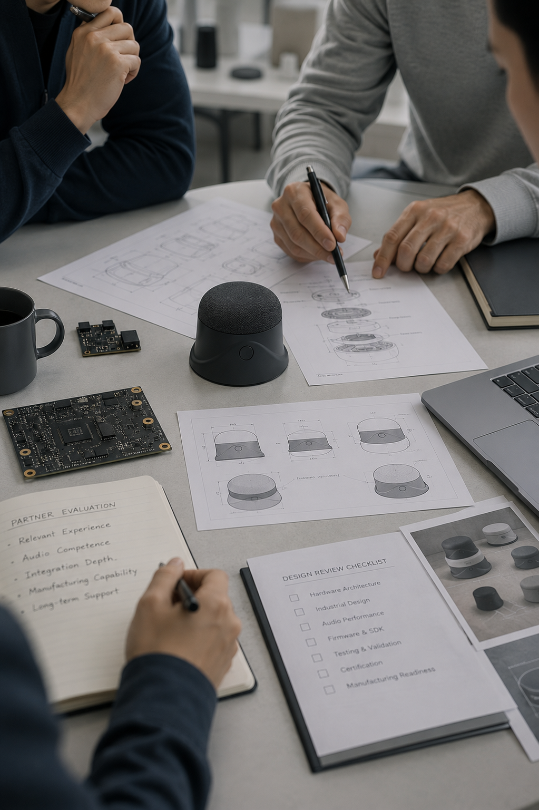

What Is AI Hardware Integration?
AI hardware integration is the engineering work of bringing an AI model and its software together with a physical device so they function as one dependable product. It is not simply "putting a chip in a box." It is the coordinated design of the sensors that capture the real world, the processor that runs or reaches the model, the memory and power system that sustain it, the radios that connect it, the firmware that ties everything together, and the cloud APIs the device talks to. Get any one of these wrong and the AI that worked flawlessly on a laptop stutters, drains its battery, or fails in the field.
The central question in every integration project is where inference happens. Some processing must run on the device itself — wake-word detection, voice activity detection, noise reduction, and privacy-sensitive analysis. Other workloads, such as large-model transcription or LLM reasoning, are better served from the cloud. The architecture that splits work between edge and cloud, and the pipeline that moves data reliably between them, is the heart of the discipline.
For AI companies, integration is the bridge between a working demo and a manufacturable product. It answers concrete questions: which processor delivers the needed inference within your cost and power budget, how audio is captured cleanly in a noisy room, how the device updates itself after launch, how user data stays private, and how the whole thing survives certification and volume production. This guide walks through each of those layers in turn.
Why AI Companies Need Hardware Integration
The most capable AI models in the world are only as useful as their access to the real world. A medical scribe needs to hear a clinician and patient clearly across a busy exam room; a field-service assistant needs to capture a technician's notes hands-free in a noisy plant; a wearable needs to run for a full shift on a small battery. None of that is a software problem — it is a hardware problem that determines whether the AI ever gets clean input to work with.
Dedicated hardware also unlocks product categories that a phone app cannot serve: always-on voice capture, purpose-built form factors, offline operation, and data that never leaves a controlled device. It removes the friction of asking users to open an app, and it lets you own the full experience — and the recurring value — rather than renting attention on someone else's platform. For many AI companies, the device is what turns a feature into a defensible business.
The challenge is that building hardware is a fundamentally different discipline from shipping software. Silicon selection, PCB layout, RF design, acoustic tuning, thermal and power management, certification, and supply chain each carry their own hard-won expertise and long lead times. AI teams that try to learn all of it in-house typically lose a year to avoidable re-spins. Partnering with an experienced integration team lets you keep owning the model and the product vision while an expert closes the hardware gap.
AI Hardware Integration Architecture
A reference architecture for an integrated AI device flows from input to intelligence to output. At the front end sit the sensors — microphones, cameras, IMUs, or environmental sensors — that capture raw signal. That signal passes through a pre-processing stage, often on a dedicated DSP or the main processor, where audio is beamformed and denoised, or video is framed and compressed. The cleaned data is then handed to the inference layer, which either runs a model locally on an NPU or MCU, or packages the data and sends it to a cloud endpoint.
Surrounding this pipeline are the supporting subsystems: memory and storage to buffer data, a connectivity stack (BLE, Wi-Fi, or cellular) to reach the cloud and companion app, a power management system sized for the device's duty cycle, and firmware that orchestrates the whole sequence and manages state, security, and OTA updates. The companion app and backend SDK complete the loop, giving users control and delivering results.
The single most consequential architecture decision is the edge/cloud/hybrid split. A pure-edge design maximizes privacy, latency, and offline resilience but is bounded by the silicon you can afford. A cloud-first design gives you the biggest models and instant updates at the cost of connectivity dependence and per-request expense. Most successful products are hybrid — lightweight, latency-critical, and privacy-sensitive tasks run on-device, while heavy reasoning runs in the cloud. Deciding this split early, before PCB layout, is what prevents costly re-spins later.

Core Components of AI Hardware Integration
Every integrated AI device is assembled from the same family of building blocks. Understanding what each one does — and how the choices interact — is the foundation for scoping a realistic bill of materials and avoiding late-stage surprises. The sections below walk through each core component and the trade-offs that matter most for AI workloads.
Sensors & Input
Sensors are the device's window onto the world, and their quality sets a ceiling on everything the AI can do downstream. For voice products, this means the microphone array — the number, placement, and quality of MEMS microphones directly determine how well beamforming and noise reduction can isolate a speaker. Other products add cameras, inertial measurement units, or environmental sensors. Because a model can never recover information the sensor failed to capture, sensor selection and placement are made early and validated in real acoustic and lighting conditions, not on a bench in isolation.
PCB & PCBA
The printed circuit board is the physical substrate that ties every component together, and the assembled board (PCBA) is where design meets manufacturing. For AI devices the layout is unusually demanding: high-speed data lines to processors and cameras, sensitive analog audio traces, and RF antennas must coexist without interfering with one another. Good layout keeps noise away from microphone signals, routes power cleanly, and leaves room for thermal dissipation. Board design also drives manufacturability — component choices and footprint decisions determine whether the design can be built reliably on an automated SMT line at volume.
Microcontrollers & Processors
The processor is the brain of the device and the biggest single lever on cost, power, and how much AI can run on-device. The choice spans a spectrum: simple microcontrollers (MCUs) for sensor handling and wake-word detection, application-class microprocessors (MPUs) running Linux for richer edge workloads, and integrated systems-on-chip (SoCs) with dedicated NPUs for meaningful on-device neural inference. Picking too little compute forces everything to the cloud; picking too much wastes battery and bill-of-materials cost. The table below summarizes how the three classes compare.
MCU vs. MPU vs. SoC
| Feature | MCU | MPU | SoC |
|---|---|---|---|
| Compute | Low — real-time control, DSP, wake-word | High — app-class, runs Linux | Highest — CPU + GPU/NPU on one die |
| Power draw | Very low (µA–mW sleep) | Moderate to high | Moderate to high; NPU is efficient per inference |
| Best for | Wearables, sensor hubs, always-on wake | Edge gateways, richer local processing | On-device neural inference, camera, display |
| Cost | $ — cents to a few dollars | $$ — needs external memory/PMIC | $$$ — highest BOM, most capability |
Memory & Storage
Memory and storage are frequently underestimated and are a common cause of mid-project re-specs. RAM must hold the running model, its activations, and the audio or image buffers in flight, while flash storage holds firmware, any on-device model weights, and captured data awaiting upload. On-device AI is especially memory-hungry — a quantized speech or vision model can consume several megabytes, and OTA updates require enough spare flash for a second firmware image plus rollback. Sizing memory generously at the architecture stage is far cheaper than discovering a shortfall after the PCB is laid out.
Wireless Modules (BLE / WiFi)
Connectivity is how the device reaches its companion app and cloud AI, and the radio choice shapes both user experience and battery life. Bluetooth Low Energy is ideal for pairing, control, and small data syncs at minimal power draw. Wi-Fi is the workhorse for uploading audio or video, reaching cloud inference directly, and pulling large OTA updates without a phone in the loop. Cellular (4G/LTE or LTE-M) adds standalone connectivity where no local network exists. Many products carry more than one radio; the table below contrasts the two most common.
BLE vs. WiFi
| Feature | BLE | WiFi |
|---|---|---|
| Range | ~10–30 m indoors | ~30–50 m indoors, via access point |
| Throughput | Low — up to ~1–2 Mbps practical | High — tens to hundreds of Mbps |
| Power draw | Very low — ideal for battery devices | High — meaningful battery impact |
| Best for | Pairing, control, small syncs via phone | Audio/video upload, cloud AI, large OTA |
Power Management
Power management determines whether a device lasts a full shift or dies at lunch, and it is tightly coupled to every other choice. The power management IC (PMIC), battery chemistry and capacity, charging circuit, and — most importantly — the firmware's sleep strategy together define battery life. AI workloads are bursty: the device idles in a low-power wake-word state most of the time, then spikes when capturing and processing. Designing aggressive sleep states and duty-cycling the processor and radios is usually more effective than simply adding a bigger battery, which adds size, weight, and cost.
Audio DSP
For voice-first products, the audio DSP pipeline is what separates a usable device from a frustrating one. Before any AI ever sees the signal, the pipeline handles acoustic echo cancellation, beamforming across the microphone array to focus on the speaker, noise reduction to suppress background sound, and automatic gain control. This front-end processing — tuned to the specific enclosure, microphone placement, and acoustic environment — is what lets a cloud or on-device model transcribe accurately in a real exam room, factory, or vehicle. Audio tuning is specialized work and is one of the most common reasons voice devices underperform in the field.
Firmware & OS
Firmware is the software layer that orchestrates the hardware — managing sensors, the inference pipeline, connectivity, power states, security, and OTA updates. Constrained devices typically run a real-time operating system (such as FreeRTOS or Zephyr) or bare-metal code, while more capable SoCs run embedded Linux. The firmware is where timing, reliability, and the edge/cloud handoff are actually implemented, and it is also where security features like secure boot and signed updates live. Robust firmware is what makes a device dependable in the field long after launch.
Cloud Connectivity & SDK
The cloud layer and SDK connect the device to your AI services and to the user. The device authenticates, streams or uploads data to your endpoints, and receives results, model updates, and configuration in return. A well-designed SDK abstracts this so the device treats your AI as a service — calling your existing APIs or streaming audio to your pipeline — while handling authentication, retries, buffering during connectivity gaps, and secure transport. This is the layer that lets an AI software team keep owning the model and backend while the device is built around it.
AI Hardware Integration Examples
The principles above take concrete shape across product categories. The examples below illustrate how the edge/cloud split, sensor choices, connectivity, and power budget change depending on what the device is asked to do — and where the hard integration problems typically sit.
Medical AI Scribe
A medical scribe device captures a clinician-patient conversation and turns it into structured notes. The integration challenge is acoustic: a multi-microphone array with strong beamforming and noise reduction must isolate two speakers in a reverberant exam room. Wake-word and voice activity detection run on-device for responsiveness and privacy, while transcription and clinical summarization run in the cloud. Because health data is involved, the pipeline is built for privacy and compliance, keeping raw audio controlled and encrypting everything in transit.
Smart Glasses
Smart glasses pack microphones, speakers, sometimes a camera, and a battery into a tight, weight-sensitive form factor. The integration is dominated by thermal and power constraints — there is almost no room for battery, so aggressive duty-cycling and efficient on-device processing are essential. BLE links to a phone that provides heavier compute and connectivity, offloading cloud AI to the paired device to preserve the wearable's battery and keep it light enough to wear all day.
AI Earbuds
AI earbuds combine audio playback, voice capture, and increasingly on-device intelligence in an extremely small enclosure. Bone-conduction or in-ear microphones, low-power Bluetooth audio, and tiny batteries make power management the defining constraint. Wake-word detection and audio processing run on a low-power DSP, while conversational AI runs in the cloud through the paired phone. The acoustic tuning to capture the wearer's voice cleanly while rejecting wind and ambient noise is the core integration work.
Smart Badge
A smart badge is a lightweight, always-on wearable for frontline and shift-based workers — capturing voice notes, communications, or context throughout a shift. The priorities are all-day battery life, reliable connectivity across a large facility (often Wi-Fi with BLE for provisioning), and a rugged, comfortable form factor. Most processing is offloaded to the cloud to keep the badge small and inexpensive, with on-device wake and buffering to bridge connectivity gaps.
AI Cameras
AI cameras run vision models — object detection, presence, or scene analysis — and are strong candidates for edge inference because streaming raw video to the cloud is bandwidth-hungry and privacy-sensitive. An SoC with a dedicated NPU runs the vision model locally, sending only events or metadata upstream. The integration challenges are image signal processing, thermal management under sustained inference load, and delivering enough compute within the power and cost budget.
Industrial Wearables
Industrial wearables bring AI assistance to technicians and operators in demanding environments. Ruggedization, dust and water resistance, glove-friendly controls, and long battery life dominate the design, alongside audio tuning that works in high-noise settings. Connectivity may combine Wi-Fi, BLE, and cellular to stay online across a plant or field site, and hands-free voice interaction is central so workers can keep working while they capture data.
Voice Agents
Standalone voice-agent devices — smart speakers, desk assistants, and communication devices — are built around clean far-field audio capture and low-latency response. A microphone array with beamforming handles the acoustics, on-device wake-word detection triggers capture, and cloud AI handles speech recognition and conversational reasoning. Because these devices are usually mains-powered or generously batteried, the integration focus shifts from power to audio quality and responsiveness.
Edge AI Gateway
An edge AI gateway aggregates data from multiple sensors or devices and runs heavier local inference before deciding what to send to the cloud. Built around an MPU or SoC running Linux, it prioritizes compute, memory, and robust connectivity over battery life since it is typically powered. Gateways are the pattern of choice when latency, bandwidth, or privacy make it impractical to send everything upstream, acting as a local intelligence hub for a fleet of simpler endpoints.
Common AI Hardware Integration Challenges
The recurring failures in AI hardware projects are rarely about the AI model itself. The first is the reality gap: a model that performs beautifully on clean recordings degrades sharply on real device audio, because the microphone, enclosure acoustics, and noise environment were not accounted for. The fix is to capture and validate on the actual hardware early, and to invest in the audio front-end rather than expecting the model to compensate.
The second is under-budgeting power and memory. On-device inference is far heavier than teams expect, and a design that ignores sleep states or under-sizes RAM and flash forces expensive re-spins. The third is deferring connectivity, security, and OTA to "later" — retrofitting signed updates, secure boot, and buffering into a shipped design is painful and sometimes impossible. The fourth is treating certification as an afterthought, when RF and safety failures discovered late can require hardware changes and reset the schedule by months.
Underlying most of these is a coordination problem: silicon, PCB, firmware, acoustics, cloud, and manufacturing decisions are deeply interdependent, and teams optimizing one in isolation create problems downstream. The most reliable way to avoid this is to make the big architecture decisions together, up front, with people who have shipped this class of device before.

The model is almost never the bottleneck — the audio front-end is. Teams routinely spend months improving accuracy that a properly tuned microphone array and DSP pipeline would have delivered for free.
Lock the edge-versus-cloud split and the processor class before PCB layout begins. Nearly every expensive re-spin traces back to an architecture decision that was left open too long.
AI Hardware Development Cost
The cost of an integrated AI device breaks into two parts: non-recurring engineering (NRE) to design and validate the product, and per-unit cost to manufacture it. NRE covers industrial and mechanical design, custom PCB layout, firmware and SDK integration, audio tuning, tooling for the enclosure, and certification — commonly tens to low hundreds of thousands of dollars depending on complexity and how much can be built on proven reference designs. Reusing a validated platform is the single biggest way to reduce it.
Per-unit cost is driven by the processor class, memory, radios, battery, sensors, and enclosure, and it falls significantly with volume as tooling amortizes and component pricing improves. The architecture decisions made early — especially the processor and the edge/cloud split — set the floor on both NRE and unit cost, which is why they deserve the most scrutiny at the start. The table below maps the phases a device passes through and what drives cost at each stage.
Prototype vs. Production Cost Breakdown

| Phase | Typical Activities | Cost Drivers |
|---|---|---|
| Prototype | Architecture, breadboard/dev-kit builds, feasibility, early firmware | Engineering time, dev boards, iteration cycles |
| EVT / DVT | Custom PCB, enclosure tooling, audio tuning, design validation | Tooling, board spins, test fixtures, lab time |
| PVT | Production-representative build, process validation, certification | Certification fees, pilot run, yield tuning |
| Production | Volume manufacturing, assembly, QC, packaging | BOM, labor, volume; unit cost drops with scale |
Embedded AI Hardware
Embedded AI hardware is the class of device that runs neural inference on-device rather than relying solely on the cloud. The enabling technology is the accelerator — an NPU, DSP, or vector engine integrated into the processor — paired with a model that has been optimized to fit. Optimization means quantization (dropping weights from 32-bit float to 8-bit integer or lower to cut memory and speed up math), pruning and distillation to shrink the model, and compiling it to a runtime that targets the specific silicon.
Edge inference buys you low latency, offline operation, predictable cost at scale, and strong privacy because raw data can stay on the device. The trade-off is that you are bounded by the compute and memory you can afford in the bill of materials, and every optimization risks some accuracy that must be validated on real inputs. The practical answer for most products is hybrid: run the latency-critical and privacy-sensitive stages on the edge, and reach the cloud for the heaviest reasoning. The table below contrasts the two extremes.
Cloud AI vs. Edge AI

| Feature | Cloud AI | Edge AI |
|---|---|---|
| Latency | Higher — network round-trip | Very low — local, often sub-100ms |
| Privacy | Raw data leaves the device | Raw data can stay on-device |
| Cost at scale | Recurring per-request/compute cost | One-time silicon cost, no per-use fee |
| Offline capability | None — requires connectivity | Full — works without a network |
How to Choose an AI Hardware Integration Partner
The right partner depends on how much of the hardware discipline you want to own. An OEM builds to your finished design, which suits teams with in-house hardware engineering. An ODM contributes the design itself — architecture, reference platforms, firmware, and acoustics — which is the better fit for AI software companies that want to move fast without hiring a full hardware team. The table below contrasts the two models.
Beyond the model, evaluate a partner on demonstrated experience with your device class, whether they cover the full stack (hardware, firmware, audio, SDK integration, and manufacturing) or only a slice, their ability to take you from prototype through certification to volume, and how they handle the AI-specific work of SDK integration and on-device optimization. A partner who has shipped similar products has already paid for the mistakes you would otherwise make. Ask to see relevant programs, understand who owns the IP, and confirm they can scale production to your forecast.
ODM vs. OEM
| Feature | ODM | OEM |
|---|---|---|
| Design ownership | Partner designs; may build on reference platforms | You own the complete design |
| Time to market | Faster — leverages proven designs and firmware | Slower — you engineer from scratch |
| Customization | High, guided by partner's platform and expertise | Total — bounded only by your own team |
| Best for | AI/software teams without in-house hardware | Teams with mature hardware engineering |
Why GMIC AI
GMIC AI is the AI-hardware division of Gainstrong, a contract manufacturer founded in 2009 with more than fifteen years of manufacturing experience and over 270 hardware programs shipped. We exist to close a specific gap: AI teams build software fast but struggle to build hardware. We take that hardware off your plate end to end — from concept and prototype to volume production of 50,000+ units per month — so your team stays focused on the model and the product.
Our engagement is full-stack OEM/ODM: hardware architecture, PCB design, embedded firmware, mechanical and industrial design, audio tuning (microphone arrays, beamforming, and noise reduction), SDK and API integration, prototype and validation, private label and packaging, and certification including FCC and CE. With operations in California and a vertically integrated Shenzhen facility spanning SMT through final assembly, we control quality and timeline across the entire path from design to shipped product.
We have shipped voice-first and edge-AI devices across categories — AI voice recorders, wearables such as smart glasses, earbuds, and bone-conduction devices, AI communication devices, speakers, and smart badges. That experience means the hard integration problems described throughout this guide are ones we have already solved, which is what lets AI companies reach market faster and with less risk.
